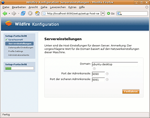
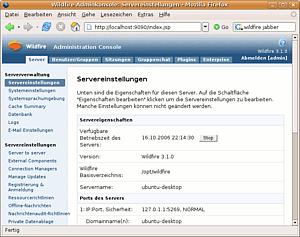

Openfire
Dieser Artikel wurde für die folgenden Ubuntu-Versionen getestet:
Ubuntu 14.04 Trusty Tahr
Zum Verständnis dieses Artikels sind folgende Seiten hilfreich:
Openfire  (ehemals Wildfire) ist ein Open-Source Jabber-Server. Der Server wird unter zwei Lizenzen verteilt, einmal unter der GPL und einmal als Openfire Enterprise Server unter einer kommerziellen Lizenz. Der Enterprise Server besitzt wohl einige Funktionen mehr wie z.B. das Erzeugen von Berichten, die GPL-Variante reicht jedoch sicherlich für kleine Heimnetzwerke oder kleinere Unternehmen aus.
(ehemals Wildfire) ist ein Open-Source Jabber-Server. Der Server wird unter zwei Lizenzen verteilt, einmal unter der GPL und einmal als Openfire Enterprise Server unter einer kommerziellen Lizenz. Der Enterprise Server besitzt wohl einige Funktionen mehr wie z.B. das Erzeugen von Berichten, die GPL-Variante reicht jedoch sicherlich für kleine Heimnetzwerke oder kleinere Unternehmen aus.
Das Programm ist sehr einfach zu installieren und zu verwalten. Die Autoren der Software versprechen auch hohe Sicherheit und sehr gute Leistung. Der Vorteil eines privaten Jabber-Servers besteht darin, dass man für die Verfügbarkeit des Services selber verantwortlich ist und dass man bei der Installation des Servers in einem LAN sicher sein kann, dass keine Daten nach außen gelangen. So kann man auch ruhigen Gewissens vertrauliche Details über Jabber innerhalb eines Betriebes austauschen.
Ist die Server-zu-Server-Unterstützung aktiviert und der Server aus dem Internet zu erreichen, so ist man im Jabber-Netzwerk unter seiner eigenen Jabber-ID ich@meinjabberserver.foo.bar zu erreichen.
Voraussetzungen¶
Das Programm erfordert eine Java-Laufzeitumgebung (JRE), welche mindestens der Version 1.6 (Java 6) oder neuer entsprechen sollte. Im Zweifelsfall empfiehlt sich die Verwendung von Oracle Java.
Installation¶
Von Ignite Realtime werden
DEB-Pakete  angeboten.
Die unterstützten Ubuntuversionen und Architekturen werden aufgelistet.
Nachdem man sie für die korrekte Ubuntuversion und Architektur geladen hat, müssen DEB-Pakete noch installiert werden.
angeboten.
Die unterstützten Ubuntuversionen und Architekturen werden aufgelistet.
Nachdem man sie für die korrekte Ubuntuversion und Architektur geladen hat, müssen DEB-Pakete noch installiert werden.
Hinweis!
Fremdpakete können das System gefährden.
Dienst steuern¶
Nach der Installation wird Openfire sofort gestartet. Wie andere Dienste bringt Openfire Start/Stop-Skripte mit. Diese Skripte dienen zum Kontrollieren des Servers. Dazu führt man in einem Terminal [3] das init-Skript aus.
# Allgemein
sudo /etc/init.d/openfire {start|stop|restart|force-reload}
# Beispiel
sudo /etc/init.d/openfire restart Mehr dazu im Wiki unter Dienste.

Konfiguration¶
Openfire¶
Openfire wird komplett über eine Weboberfläche konfiguriert und administriert. Diese ist über Port 9090 bzw. über 9091 (TLS bzw. SSL) zu erreichen. In einem Browser öffnet man daher die URL http://SERVERNAME_ODER_IP-ADRESSE:9090. Beim ersten Öffnen der URL erscheint ein Einrichtungsassistent, in dem man verschiedene Einstellungen vornehmen kann. Dies sind im Folgenden:
"Sprache" - Der Server lässt sich komplett auf Deutsch einrichten
"Domain" - Falls man eine eigene Domain
domain.foo.baroder eine DynDNS-Adresse besitzt, kann man diese Domain hier eintragen und so ist der Server auch von außen und von anderen Jabber-Servern ansprechbar"Ports" - Hier kann man einstellen, auf welchen Ports der Server lauschen soll. Üblicherweise sind das die Ports
5222und5223(TLS bzw. SSL) und5269als Server-zu-Server-Port."Datenbank" - Openfire bringt eine eigene Datenbank mit, die für kleinere Installationen sicherlich ausreichend ist. Alternativ können MySQL, PostgreSQL, Oracle, Microsoft SQL oder IBM DB2 genutzt werden. Externe Datenbank erleichtern ein Update des Servers, da hier nicht auf die Datenbank achtgeben muss.
"LDAP" - Anbindung an LDAP Server (optional).
"Admin" - Als letzter Schritt muss für den Administratoraccount
adminnoch eine E-Mail-Adresse und ein Passwort vergeben werden.
Danach den Serverdienst mit dem folgenden Befehl im Terminal[3] neu starten, sonst werden eventuell geänderte Ports, sowie der Admin-Login nicht übernommen:
sudo /etc/init.d/openfire restart
Danach kann man sich erneut (unter gegebenenfalls geänderter Portnummer) in der Weboberfläche einloggen und die Administration vornehmen.
Firewall¶
Sollte man Openfire an einem Rechner betreiben, der hinter einem Router oder einer Firewall sitzt, so müssen folgende Ports freigeschaltet bzw. weitergeleitet werden, damit der Jabber-Server zum einen von Clients aus dem Internet erreichbar ist und zum anderen auch von anderen Jabber-Servern angesprochen werden kann. Soll der Server als lokaler Server im LAN ohne eine Verbindung nach außen fungieren, ist dies nicht notwendig.
| Portnummern und Funktionen | |
5222 | Jabber-Clients verbinden sich auf diesem Port |
5223 | Wird für SSL-Verbindungen zwischen Client und Server benötigt |
5269 | Port für Server-zu-Server Verbindungen. Nur so können auch andere Jabber-Server Verbindung aufnehmen und Nachrichten von anderen Jabber-Teilnehmern außerhalb des eigenen Servers empfangen werden. |
7777 | Port für File Transfer Proxy (optional) |
| Openfire-Administration | |
9090 | Port für die Administrationsoberfläche (optional) |
9091 | Port für SSL-Verbindungen zum Adminpanel (optional) |

Administration¶
Die Konfiguration von Openfire muss nur einmal vollzogen werden. Ist dies erledigt, kann die Administrationsoberfläche immer unter den URLs http://SERVERNAME_ODER_IP-ADRESSE:9090 bzw. https://SERVERNAME_ODER_IP-ADRESSE:9091 erreicht werden. Hier sollte man sich alle Punkte einmal ansehen und die für den eigenen Bedarf notwendigen Einstellungen vornehmen. Einige wichtige Optionen werden hier kurz vorgestellt.
Servereinstellungen¶
Server to Server¶
Port für Server-zu-Server-Verbindungen. Nur so können auch andere Jabber-Server Verbindungen aufnehmen und Nachrichten von anderen Jabber-Teilnehmern von außerhalb des eigenen Servers empfangen werden. Üblicherweise wird hier Port 5269 genutzt.
Registrierung & Anmeldung¶
In den Standardeinstellungen können sich neue Benutzer automatisch - wie bei Jabber üblich - neue Accounts erstellen. Möchte man dies verhindern und lieber Accounts von Hand zuweisen, so kann man dies hier ändern.
Offline-Nachrichten¶
XMPP bietet die Möglichkeit, für Server Nachrichten zu speichern und weiterzuleiten, die an einen Benutzer gesendet wurden, der nicht angemeldet ist. Unterstützung für die Speicherung und Weiterleitung von "Offline-Nachrichten" kann ein praktisches Feature für XMPP-Umgebungen sein. Die Offline-Nachrichten können aber wie bei E-Mails in erheblichem Umfang Speicherplatz auf einem Server belegen. Es gibt verschiedene Optionen für den Umgang mit Offline-Nachrichten. Bitte die Richtlinie wählen, die am besten zu den eigenen Anforderungen passt.
SSL-Sicherheitseinstellungen¶
Das Jabber-Protokoll unterstützt SSL-Verbindungen vollständig. Möchte man die Benutzer dazu zwingen, ausschließlich SSL-Verbindungen zu nutzen, kann man die Verwendung von SSL obligatorisch machen. Ebenso können hier SSL-Zertifikate importiert und verwaltet werden.
File Transfer Proxy Settings¶
Sollen Dateien zwischen Clients ausgetauscht werden, die sich nicht im selben Netzwerk befinden, so kann man hier einen Proxy-Service aktivieren. Dieser läuft üblicherweise auf Port 7777 und muss eventuell auch wieder in einer Firewall freigegeben werden.
Erweiterungen¶
Plugins können genutzt werden, um Openfire um nützliche Funktionen zu erweitern. Diese können entweder direkt von der Herstellerseite heruntergeladen werden oder auch in der Adminkonsole direkt unter dem Reiter "Plugins" installiert werden.
Gateway Plugins¶
Um XMPP-Transport unter Openfire zu ermöglichen, die für Kommunikation mit anderen Netzwerken wie ICQ, AIM oder Yahoo notwendig sind, müssen externe Plugins installiert werden.
Kraken¶
Hinweis:
Da die Entwicklung eingestellt wurde, nennt die Anleitung Alternatives to Kraken Alternativen.
Eines dieser Plugins ist Kraken , das unabhängig von Openfire entwickelt wird und eine sehr leichte Umsetzung von Transports bietet. Für die Installation wird die neueste Version als .jar-Datei heruntergeladen und in der Adminkonsole im Bereich "Plugins" hochgeladen. Nach einem Neustart kann unter "Server -> Gateways" Kraken für die Nutzung konfiguriert werden. Es reicht dabei, hinter das gewünschte Protokoll einen Haken zu setzen. Man sollte jedoch unter dem Reiter "Test" bei den jeweiligen Protokollen die Verbindung prüfen.
Problemlösungen¶
Sollte nach einer Installation die Anmeldung an der Adminkonsole fehlschlagen, können folgende Schritte nützlich sein:
Openfire neu starten:
sudo /etc/init.d/openfire restart
Sollte die Anmeldung trotzdem fehlschlagen, öffnet man die Datei /etc/openfire/openfire.xml mit Root-Rechten [3] und ergänzt den folgenden Bereich um den autorisierten Benutzer (der Benutzername, mit dem man sich anmelden möchte):
1 2 3 4 5 6 7 8 9
<adminConsole> <!-- Disable either port by setting the value to -1 --> <port>9090</port> <securePort>9091</securePort> <!-- add admin user name --> <admin> <authorizedUsernames>BENUTZERNAME</authorizedUsernames> </admin> </adminConsole>
- Erstellt mit Inyoka
-
 2004 – 2017 ubuntuusers.de • Einige Rechte vorbehalten
2004 – 2017 ubuntuusers.de • Einige Rechte vorbehalten
Lizenz • Kontakt • Datenschutz • Impressum • Serverstatus -
Serverhousing gespendet von